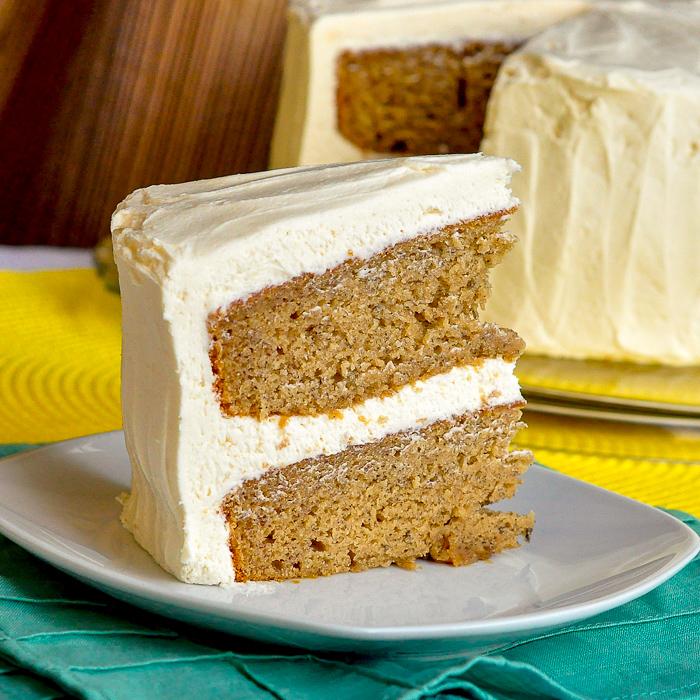

Triple chocolate fudge brownie
Triple Chocolate Fudge Brownies
Back to home

Description
Imagine warm, sticky toffee running over a delightfully delicate and
moist banana cake. This warm, timeless dessert is a take on the
English sticky toffee pudding. A crowd pleaser to be sure, for kids
and adults alike.
This is a great recipe for cleaning out your overly ripe bananas. The
more brown spots, the better. I love it when I find these suckers -
that means its time to make some cake!
Level: easy
Total: 1 hr 10 min
Yield: 10 servings
Ingredients
Banana Cake:
-
1 3/4 cups all purpose flour, spooned into measuring cup and
leveled-off with a knife
- 1 teaspoon baking powder
- 1 teaspoon baking soda
- 1/4 teaspoon salt
- 1 stick (1/2 cup) unsalted butter, melted and slightly cooled
- 3/4 cup sugar
- 2 large eggs
- 1 cup very ripe mashed bananas, from 2-3 spotty bananas
- 2 tablespoons fresh lemon juice
- 1 1/2 teaspoons vanilla extract
Toffee Sauce:
- 1 1/4 cups heavy whipping cream
- 1/2 cup dark brown sugar
- 1/2 cup light corn syrup
- 4 tablespoons unsalted butter
- Pinch of salt
Directions
-
Preheat the oven to 350°F. Butter and flour an 8x8-inch baking dish.
-
In a medium bowl, whisk together the flour, baking soda, baking
powder and salt.
-
In the bowl of an electric mixer, mix the melted butter and sugar
until blended. Add the eggs, mashed bananas, lemon juice and vanilla
extract and mix well.
-
On low speed, stir in the flour mixture until just incorporated. Do
not over mix. Pour the batter into the prepared pan and bake until
golden, and a tester inserted into the center comes out clean, about
35 minutes.
-
Meanwhile, make the sauce. Bring the heavy cream, brown sugar, corn
syrup, butter, and salt to a boil in a heavy small saucepan over
high heat, whisking until the sugar dissolves. Reduce the heat to
medium-low and cook at a gentle boil, whisking occasionally, until
the sauce is slightly thickened, about 15 minutes. It should be the
consistency of maple syrup -- it will continue to thicken as it
cools. Remove the sauce from the heat and cool.
-
Spoon 1/3 cup of the toffee sauce over top of the baked banana cake.
Return the cake to the oven and bake until the sauce is bubbling
vigorously, about 6 minutes. Cool the cake in the pan on a rack for
at least 30 minutes. Cut the cake into 9 squares or 12 rectangles.
Serve the cake slightly warm or at room temperature with warm toffee
sauce and top with sliced bananas and pecans, if desired.